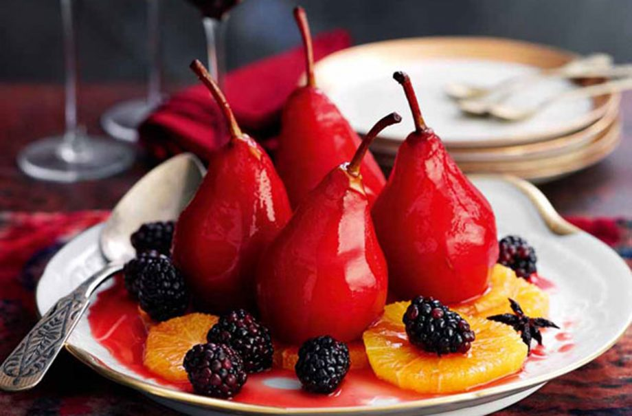

Plum jam recipe

Serves:
Prep:
Cooking:
15 Min
45 Min
If you have a plum tree in your garden with lots of fruit on it, this is a perfect recipe to use them up. Unlike other plum jam recipes, this very fruity, easy to make jam, was first published back in 1978 – but it still tastes great. Enjoy it on toast or, even better, homemade scones.
Ingredients
- 1.5kg (3lb) granulated sugar
Method
- Remove stalks and bruised parts of the plums, halve and remove stones. Put the fruit in a preserving pan with 450ml (3/4 pint) water, cover pan with a lid, and cook over a low heat until skins are soft, about 25 mins.
- Take off the lid; increase the heat and cook for about 20 mins, until the volume of fruit has been reduced by two thirds. Stir occasionally to prevent the fruit from sticking to the pan.
- Add sugar and plum kernels (see tip) and heat gently to dissolve sugar. Add the butter, then bring to boil rapidly — a “rolling boil” — for 15-20 mins, stirring occasionally, then test for setting (its temperature should be 105°C or 222°F on a sugar thermometer). Or cool a tsp of jam on a cold saucer: it should wrinkle when you push it with your finger.
- Leave the jam to cool for 10 mins before potting into warm, sterilised jars, putting a wax disc on top, then covering with cellophane. Label and date.
Top tip for making Slimming World’s spiced pears
Break open a few plum stones to get the kernels. Cover with a cloth and tap firmly with a hammer, or use a nutcracker, and add to pan with sugar.